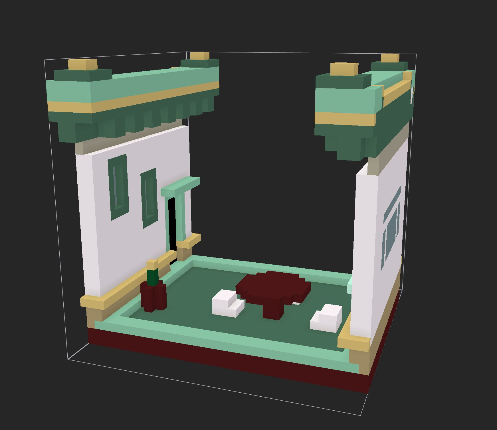
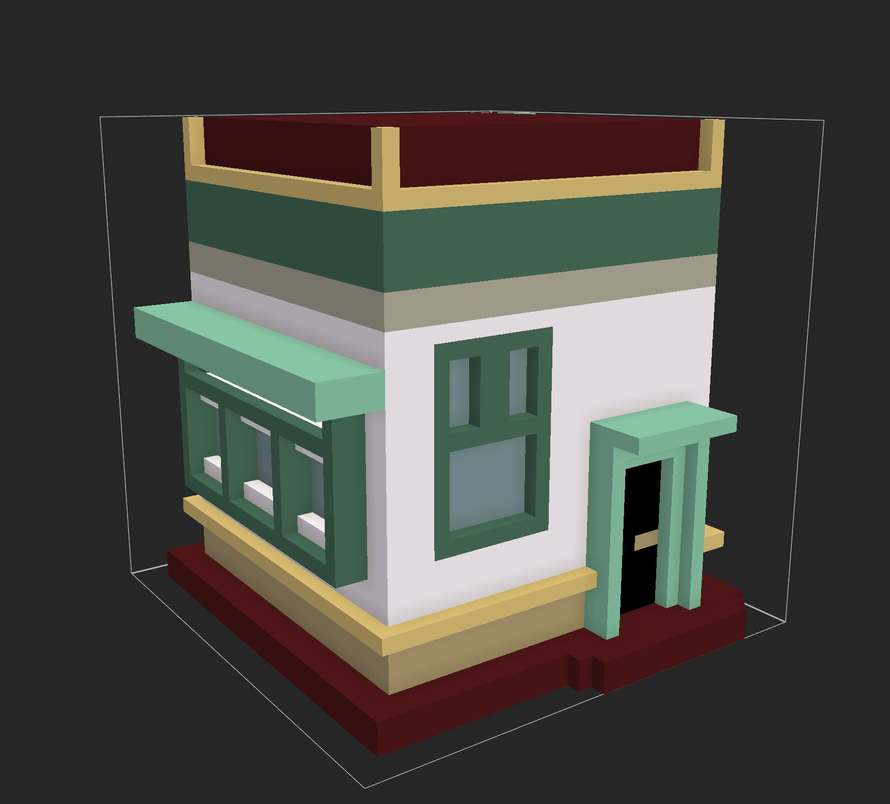
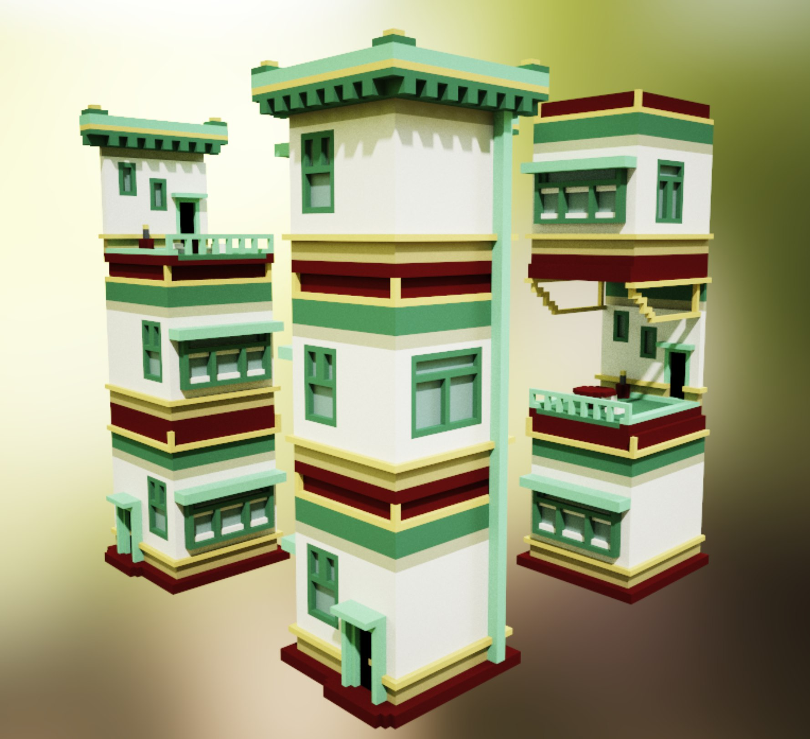
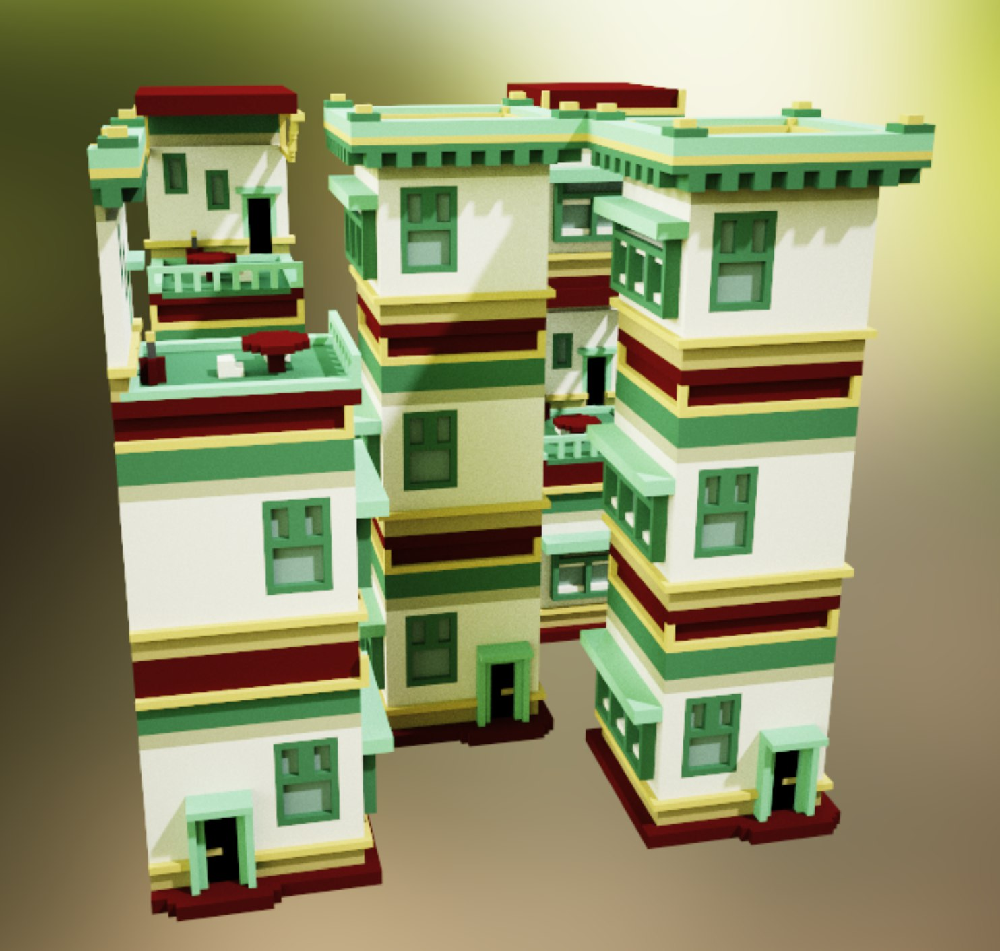
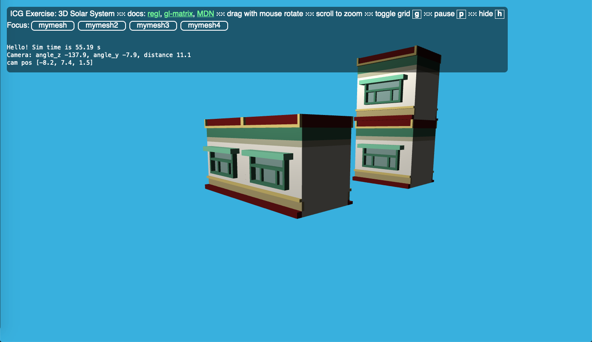
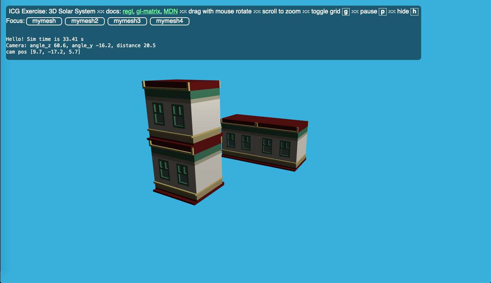

Recall summary of the project
We want to implement a wave function tiling algorithm to create cute and coherent scenes in 3D. Also, we want to make this on multiple z-axis stages where the structures remain coherent and nicely arrange in our world.
Accomplishments
- We created a set of 39 tiles (plus their rotated versions) with MagicaVoxel. Each tile is meant to be arranged nicely with some meaningful rules.
- We generated the associated set of what we called ‘sockets’. It stores which tile is accepted next to every faces of each tile.
- We implemented the wave function collapse in Java. It outputs which tile should be on every location of our XYZ world.
- We finally modified the Exercice 5 and its Actor system to be able to display the tiles in our world giving it x,y,z coordinates.
Preliminary results
The tiles we created in MagicaVoxel:
 
The tiles arranged as output by WFC:
 
The tiles in our world:
 
Updated schedule
- 20/05/21: We want to merge the WFC implementation with our tiles rendering.
- 25/05/21: Start implementing the UI for letting user set constraints.
- 27/05/21: Finish implementing the UI and start Bezier camera paths.
- 01/06/21: Finish camera paths and record video.
Our questions
- Our WFC runs for a very variable amount of time (many seconds for 3x3x3 world). Is this a big problem? Is optimization important for our project?
- We plan to display one actor per tile. Will rendering maybe dozens of tiles be a problem ? Our actors are not moving but we’re afraid it will require too much ressources, what do you think ?
- For animated birds or plants you suggested, we don’t really see which implementation you’re talking abount and how would it be done in JavaScript?
Thanks a lot !